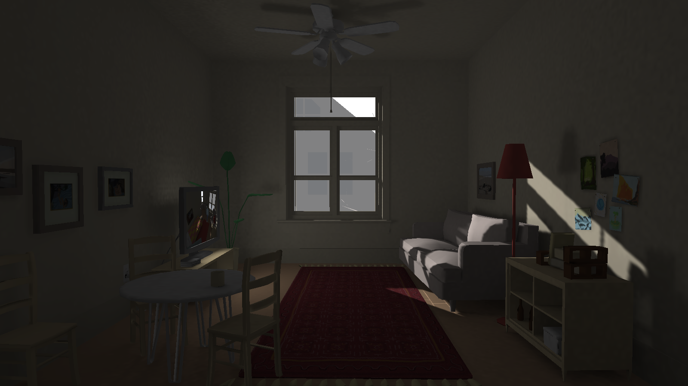
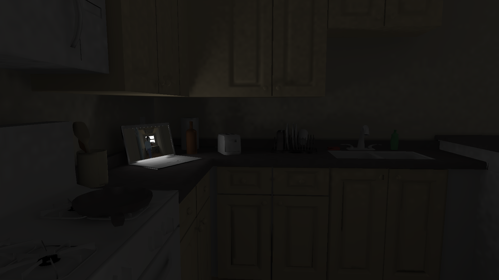
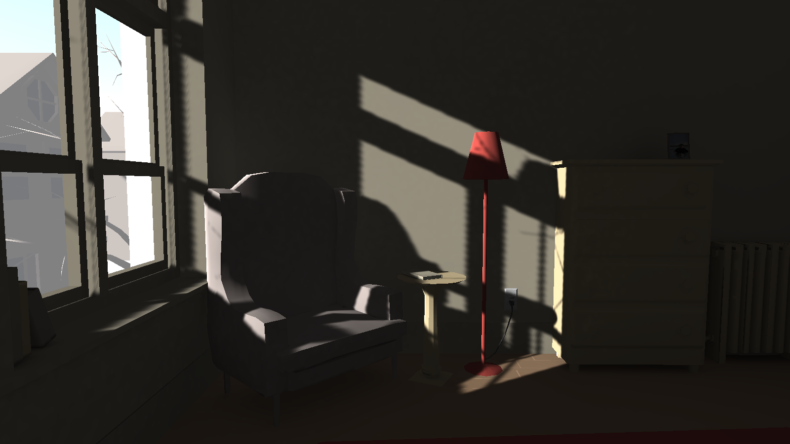
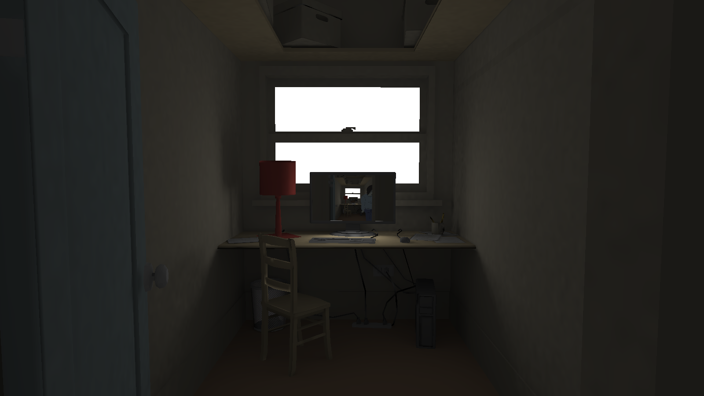

reaching 2016 ->
Reaching is a first-person, exploration-oriented videogame – what a disgruntled gamer might call a “walking simulator.” You, the player, control a recent college graduate living in a flat in a three-story townhouse. You’ll have unrivaled access to all the technological amenities of a twenty-something. You can watch TV, stare at computer monitors, or examine a fancy little tablet. There’s plenty to see, as long as you’re looking.
Code and animations by Peter Smyth, sound by Luke Van'Oene, 3d art by Thomas Newlands




This iteration expands on a 48 hour work from Global Game Jam which is playable online here.